Designing Buildings: The Architectural Part
By Charles Xie ✉
We envision a future in which AI can be used to design green buildings that consume as less energy as possible without compromising our standard of living. Before that kind of AI is invented, we need to have a tool that humans can use to design a wide variety of buildings first. The devleopment of AI-enabled architecture design can be thought of as a process of machine learning from a large set of designs created by humans, possibly even augmented by using computer vision to learn from the tremendous amount of images of existing buildings on the Internet. In Part I of this series of articles, we show the current architectural design capabilities of Aladdin with the following examples. You can view and edit any of these examples by clicking the link below it. Building energy analysis will be introduced later in this series.
A colonial house
American colonial architecture represents a style associated with the colonial period of the United States. It typically features a rectangular shape with gable roofs and symmetrical arrangements of windows.
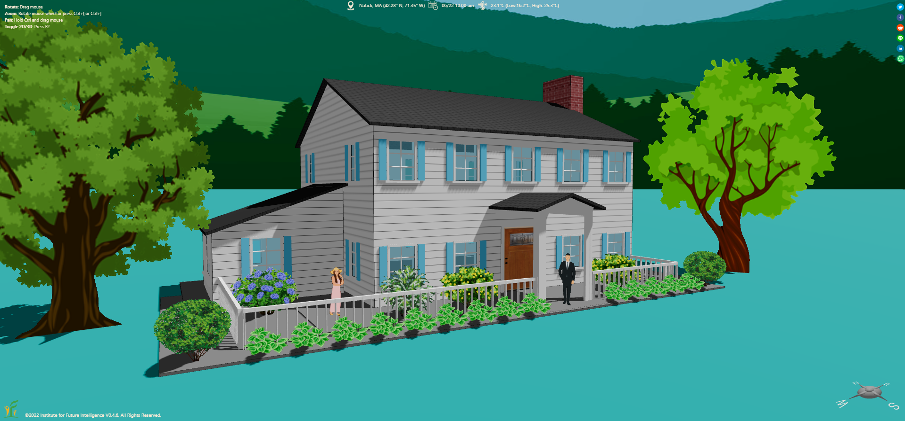
Click HERE to view and edit the above model
A Dutch colonial house
Dutch colonial is a subtype of the colonial style that is primarily characterized by gambrel roofs. This example shows a Dutch colonial house with two intersecting gambrel roofs, two dormers on the main roof, and a front porch.
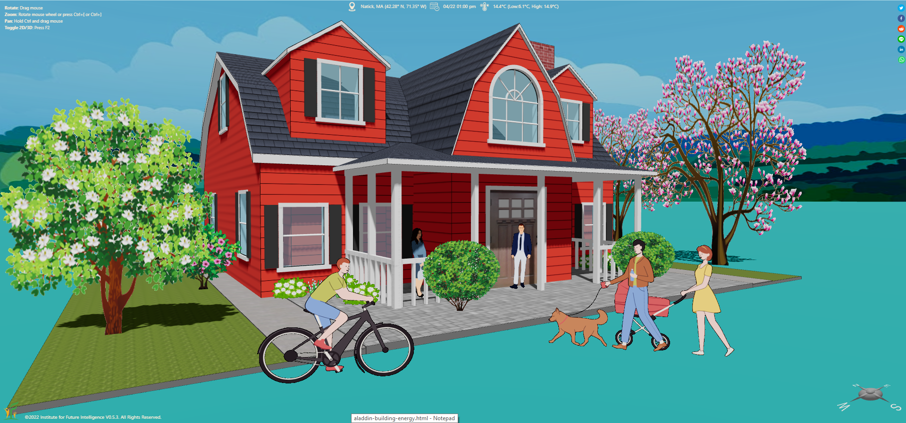
Click HERE to view and edit the above model
A Cape Cod house
A Cape Cod house is an architectural style originated from Cape Cod of Massachusetts. It is typically a single or double-story house with a pitched gable roof and a chimney. The following example shows a Cape Cod house with three dormer windows and an attached garage.
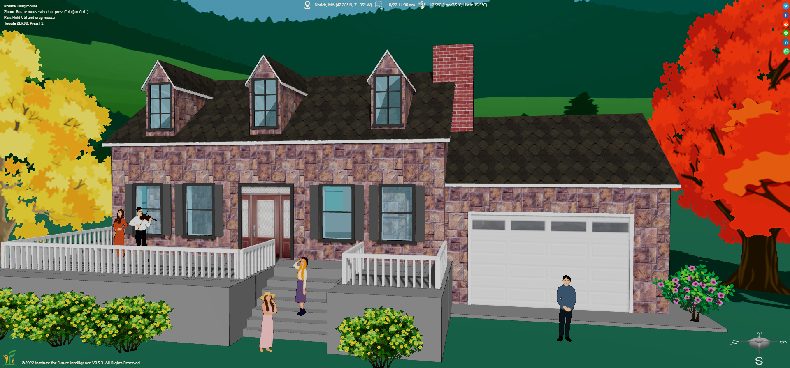
Click HERE to view and edit the above model
A Cape Cod house with a solarium
The following example shows a Cape Cod house with two dormer windows connected with a shed dormer in the middle. A solarium is attached to its sun-facing side.
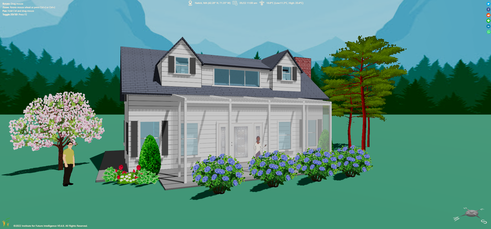
Click HERE to view and edit the above model
A bonnet roof house
The following example shows a bonnet roof that provides cover around the edges of the house for a surrounding porch.
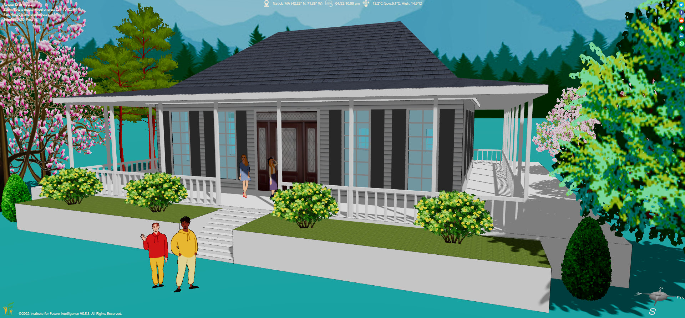
Click HERE to view and edit the above model
A mansard roof house
The following example shows a house with a mansard roof with dormer windows.
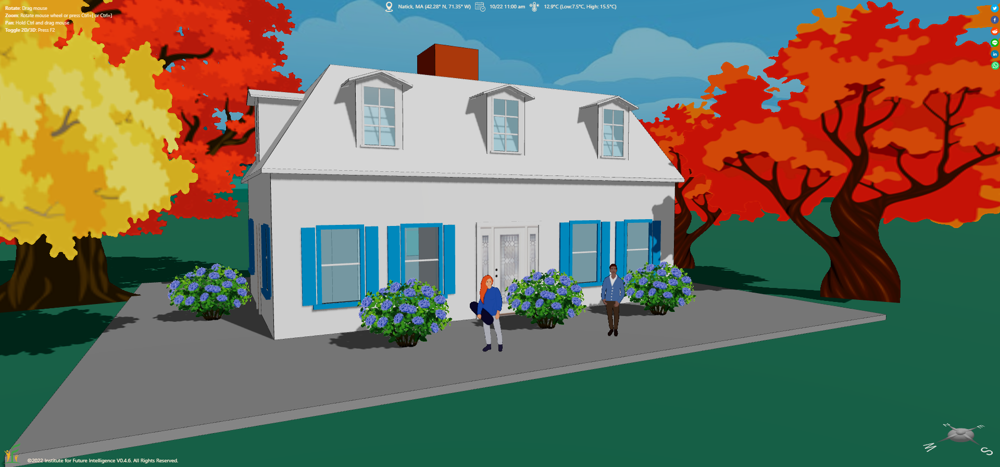
Click HERE to view and edit the above model
A barn house with a monitor roof
The following example shows a barn house with a monitor roof.
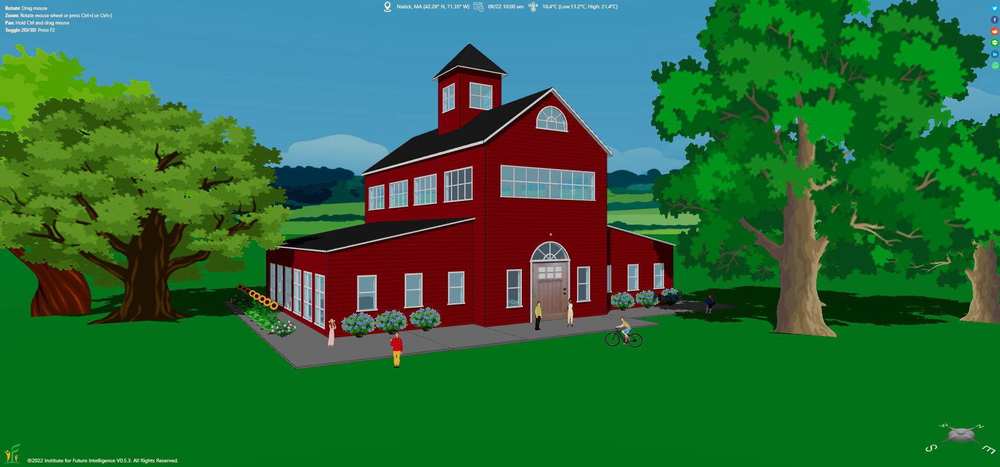
Click HERE to view and edit the above model
A Spanish style hotel
The following example shows a hotel with open arched doors.
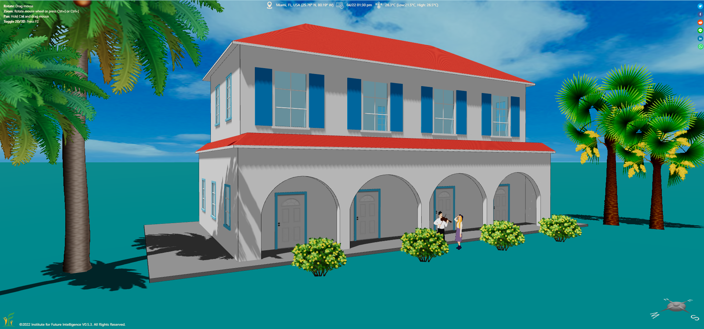
Click HERE to view and edit the above model
An adobe pueblo
The following example shows an adobe pueblo, a cluster of adobe houses built very closely together and stacked several stories high. It is a style associated with the Native American tribe of Puebloan people in Southwestern United States.
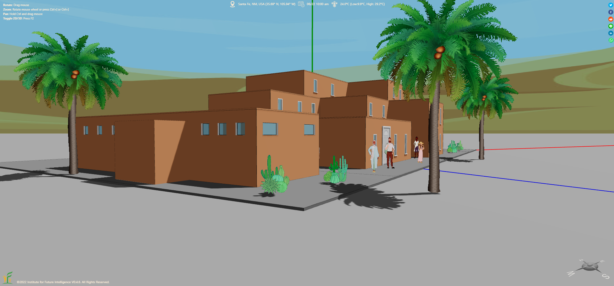
Click HERE to view and edit the above model
A modern house
Modern home design features simple shapes. The idea is that form should follow function with minimal environmental impacts.
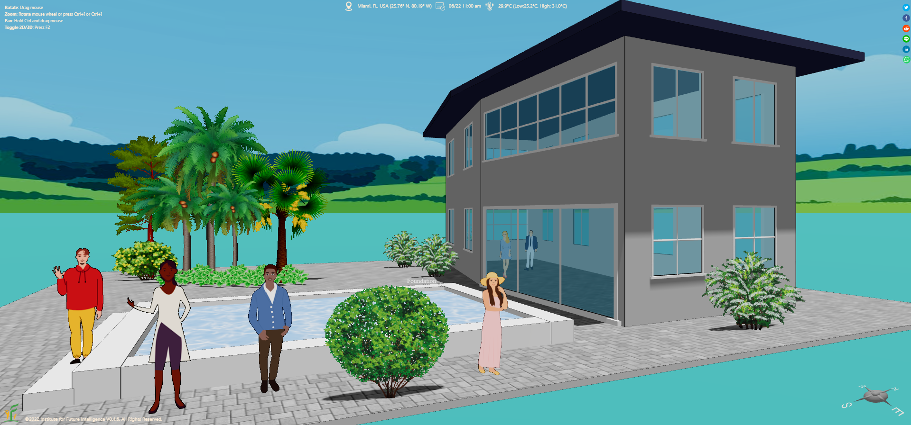
Click HERE to view and edit the above model
A house with a butterfly roof
In Aladdin, butterfly roofs can be created by morphing a gable roof using its three control points.
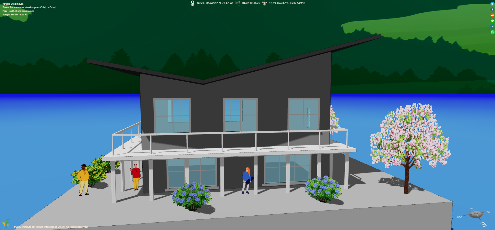
Click HERE to view and edit the above model
An apartment building
The following is an apartment building.
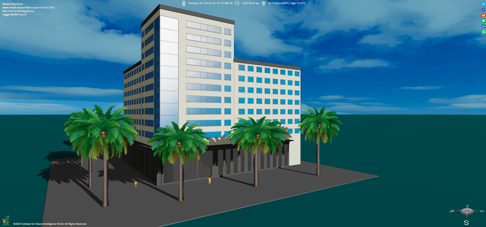
Click HERE to view and edit the above model